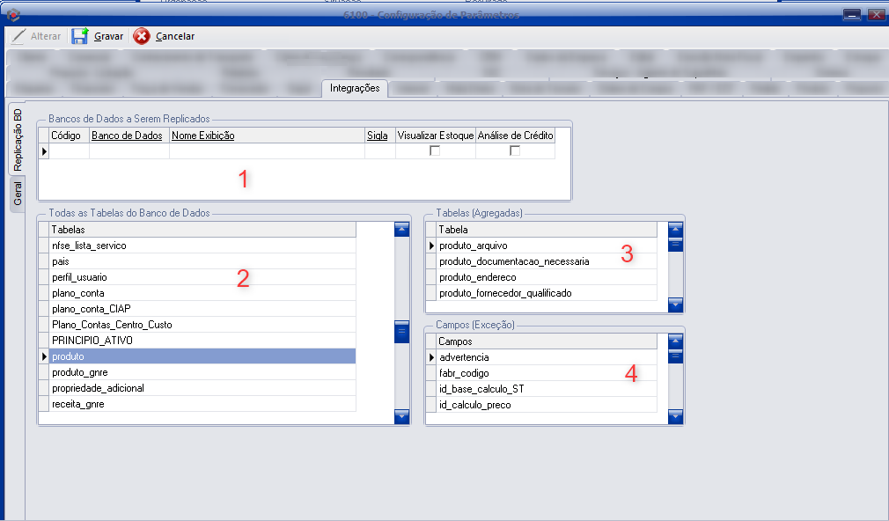

Conceito
- O que é? É uma configuração para que algumas informações de tabelas sejam clonadas entre bancos de dados.
- Quem cria? É criado no ato da instalação de um banco adicional do cliente, caso ele desejar.
- Onde habilita? Ferramentas > configuração de parâmetros > aba sistema (somente habilitado pela senha máster).
- Onde ficam? Quando habilitado: Ferramentas > configuração de parâmetros > aba integrações > replicação.
Como funciona
- Bancos de dados: que replicam os dados entre si (a sigla é exibida em relatórios/telas multi-bancos).
- Tabelas principais: que serão replicadas (ex.: Produto, cliente/fornecedor, tipos de pedido, tipos de nota, etc.).
- Tabelas agregadas: tabelas necessárias para um cadastro sem janela específica (ex.: Contato, Endereço, unidade de conversão, etc.).
- Campos exceção: campos que não podem replicar (por solicitação do cliente ou necessidade do SupraMAIS).
Observação: sempre que configurado, 3 exceções são obrigatórias para todo cliente: Produto (Quantidade estoque), Vendedor (Imagem assinatura) e Cliente (Cobrança).

Exemplos de erros
Atenção: nem sempre colocar campo como exceção é solução para erro de replicação. Cada caso deve ser avaliado individualmente — nunca utilizar sem análise detalhada.
Erro: Nome de coluna inválido
Erro: “Nome de coluna 'catpro_codigo' inválido Banco: SGC Tabela: produto”
Possível causa: o campo não foi criado em algum dos bancos que replicam (script não executado/cliente não abriu um banco, ou banco não atualizado — comum em bancos antigos que continuam na replicação).
Solução: garantir que todos os bancos estão atualizados, conferir se o campo existe na tabela produto em todos os bancos; abrir o banco indicado no erro para forçar a execução do script responsável.
Erro: conflito de chave estrangeira (FOREIGN KEY)
Erro: “Replicação cancelada. Não foi possível replicar os dados. Banco: SGC2 Tabela: produto ... INSERT conflitou com a restrição do FOREIGN KEY FK_principio_ativo ... tabela PRINCIPIO_ATIVO”
Possível causa: o princípio ativo vinculado ao produto não existia no banco de destino.
Solução: verificar se o princípio ativo existe no banco de destino; se não existir, corrigir/cadastrar e então ajustar a replicação do princípio ativo.